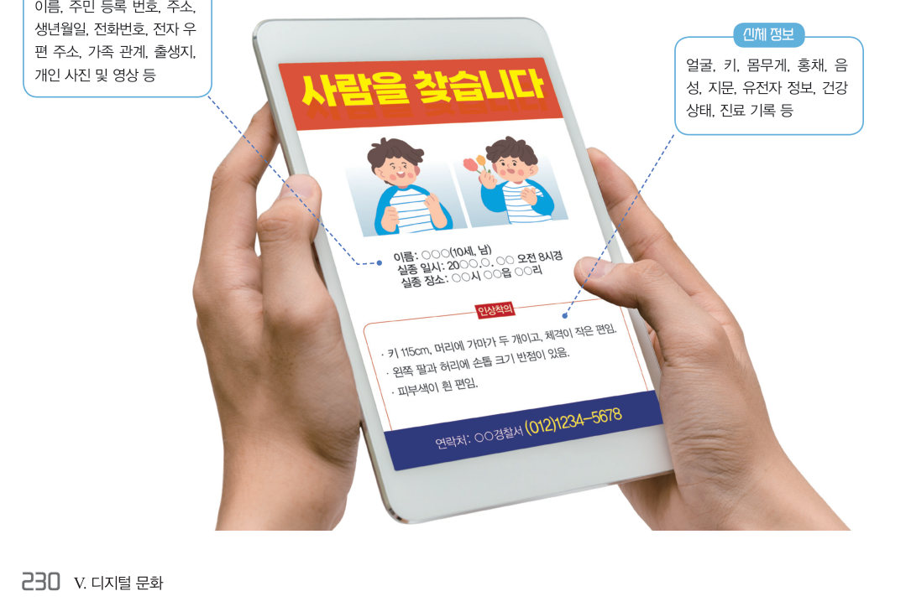
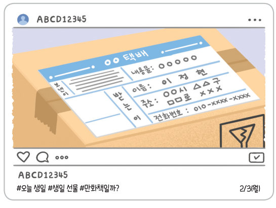
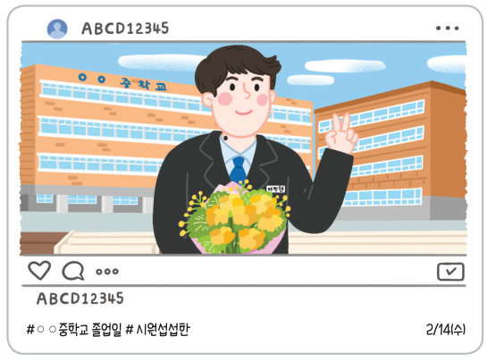
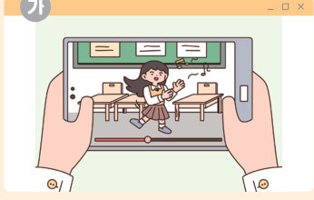
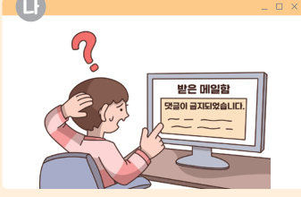
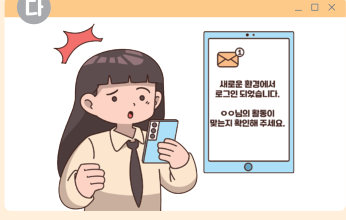

생일 선물 택배 사진 한 장에도 이름, 주소, 전화번호가 숨어 있다. 개인 정보의 종류를 나누어 보고, SNS 사진 속 개인 정보를 탐정처럼 찾아낸 뒤, 피해 사례별 대처 방법과 개인 정보 보호 실천 방안을 세워 보자.
개인 정보는 이름, 주소, 전화번호, 주민 등록 번호 등 개인을 식별할 수 있는 정보를 말한다. 개인 정보는 인적 정보 외에도 인터넷 검색 기록이나 취미 등의 행위 정보, 키, 몸무게 등의 신체 정보, 학교 생활 기록부 등의 교육 정보도 포함된다. 디지털 사회에서는 개인 정보를 사용해야 하는 일들이 점점 많아지고 있으며, 한번 유출된 개인 정보는 회수하기 어렵고 범죄에도 악용될 수 있기 때문에 개인 정보 보호의 중요성은 더욱 커지고 있다. 예를 들어 다음과 같이 사람을 찾는 포스터에서도 여러 가지 개인 정보가 담겨 있다.
| 이름, 생년월일, 전화번호 | |
| 가족 관계, 개인 사진 및 영상 | |
| 홍채, 지문, 음성 | |
| 키, 몸무게, 건강 상태, 진료 기록 | |
| 인터넷 검색 기록 | |
| 취미 | |
| 학교 생활 기록부 |
개인 정보 침해란 본인의 동의 없이 개인 정보가 수집·이용되거나 제3자에게 제공되는 것을 말한다. 개인 정보가 유출되면 명의 도용, 보이스 피싱, 사기 등 각종 범죄에 노출될 수 있어 정신적·물질적으로 심각한 피해를 입을 수 있다. 또한, 기업에서 제품의 개발과 광고 등에 고객의 개인 정보를 무단으로 사용하는 개인 정보 침해 사례가 발생하기도 하고, 최근 스마트 기기를 이용한 인터넷 서비스가 확대되면서 개인 정보 침해 건수가 해마다 증가하고 있어 개인 정보 보호를 위한 모두의 노력이 필요해지고 있다.


개인 정보를 보호하는 가장 좋은 방법은 개인이 정보 보호의 중요성을 알고 자신의 개인 정보가 노출되지 않도록 주의하고 안전하게 관리하는 것이다. 또한, 국가와 사회도 개인 정보를 보호하기 위한 예방 대책을 마련해야 한다.
만약 개인 정보 유출이 의심되면 즉시 해당 사이트의 관리자에게 알리고, 개인 정보 침해 신고 센터나 경찰에 신고해야 한다. 그리고 개인 정보 분쟁 조정 위원회에 분쟁 조정을 신청하여 더 큰 피해를 입지 않도록 해야 한다.
| 🎮 게임 아이템이 전부 없어졌어요. | |
| 📧 개인 정보가 유출되었다는 이메일을 받았어요. | |
| 📱 광고 문자 메시지가 계속 와요. |



| 평가 기준 | 스스로 평가 |
|---|---|
| 개인 정보의 개념을 이해하고 개인 정보 보호의 중요성을 설명할 수 있는가? | |
| 개인 정보를 침해한 사례에 따른 문제점을 분석할 수 있는가? | |
| 개인 정보를 관리하고 보호하는 방법을 실천할 수 있는가? |